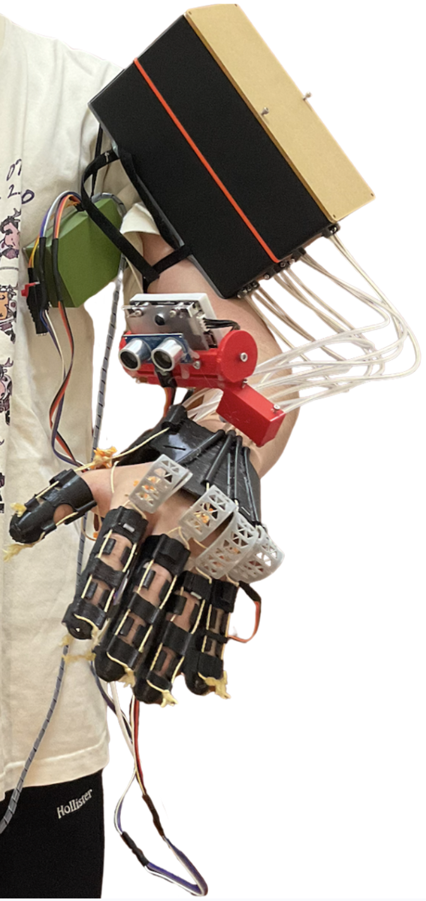
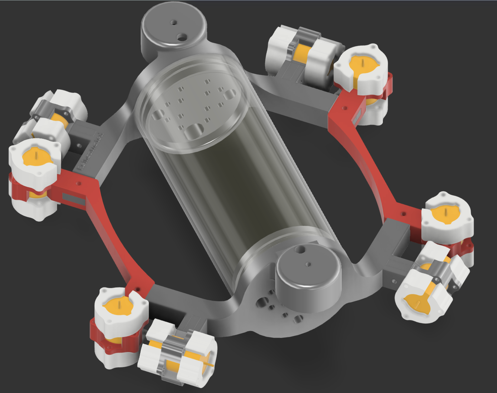
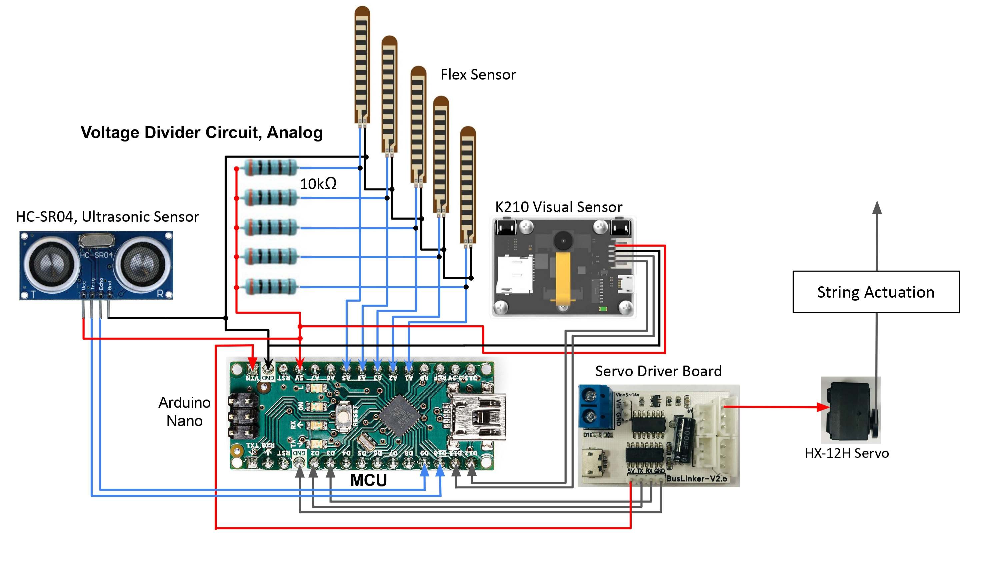
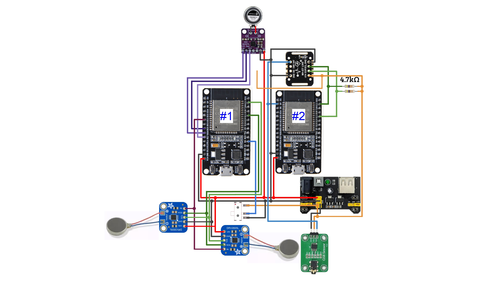
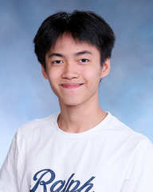

Fu Him (Tony) HuangEngineering at the intersection of biology and robotics.
I build bio-inspired hardware, generative AI wearables, and morphing-wing flight systems to solve deeply personal physical challenges.
View Technical Architecture